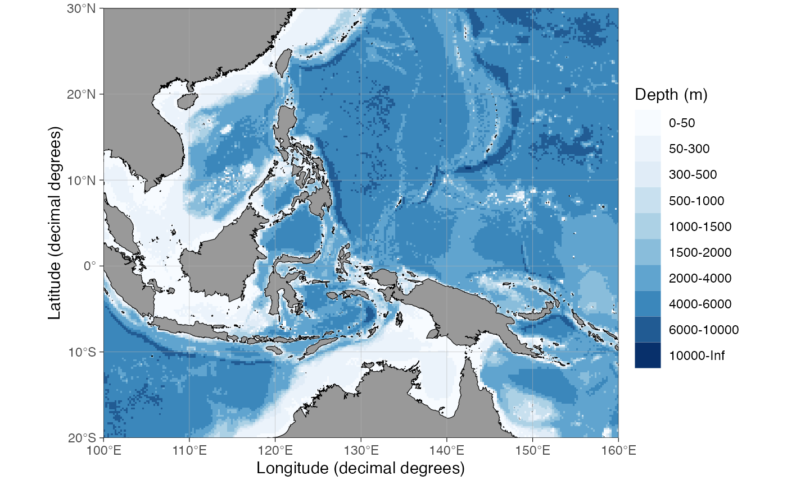
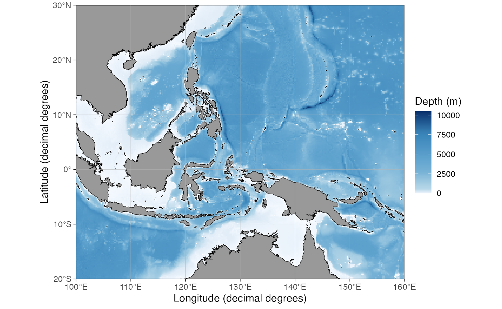
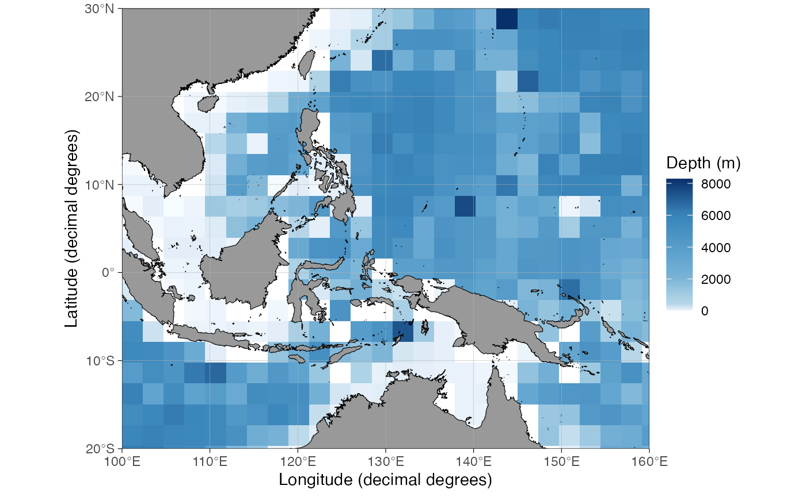
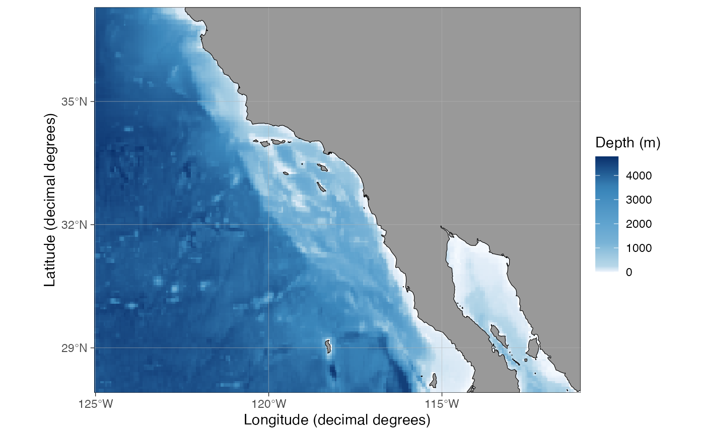
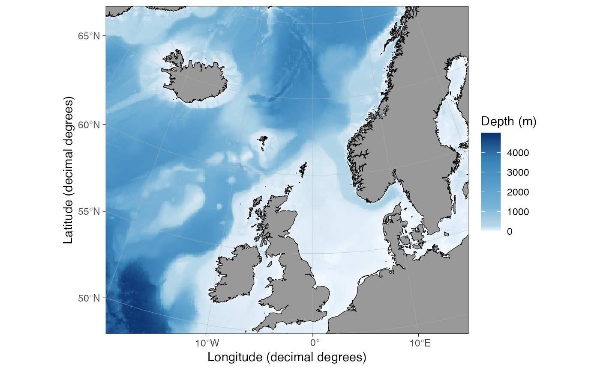
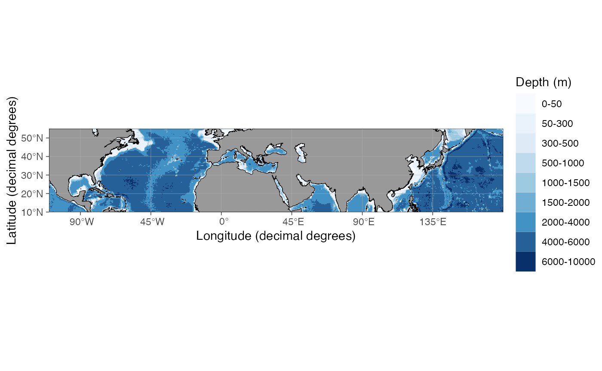
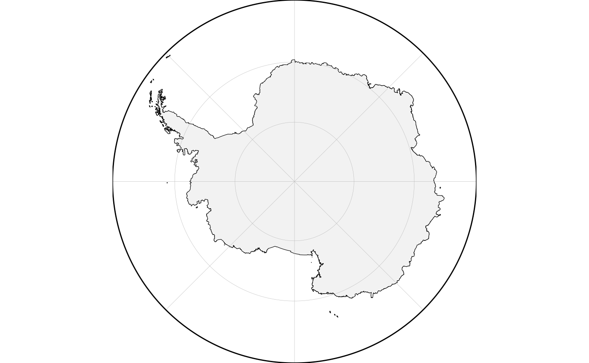
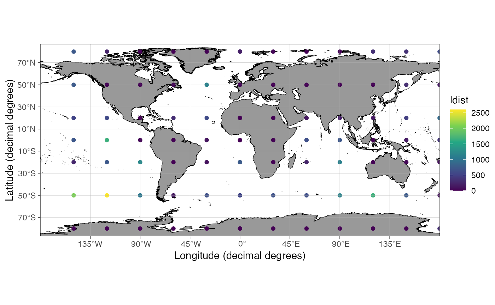
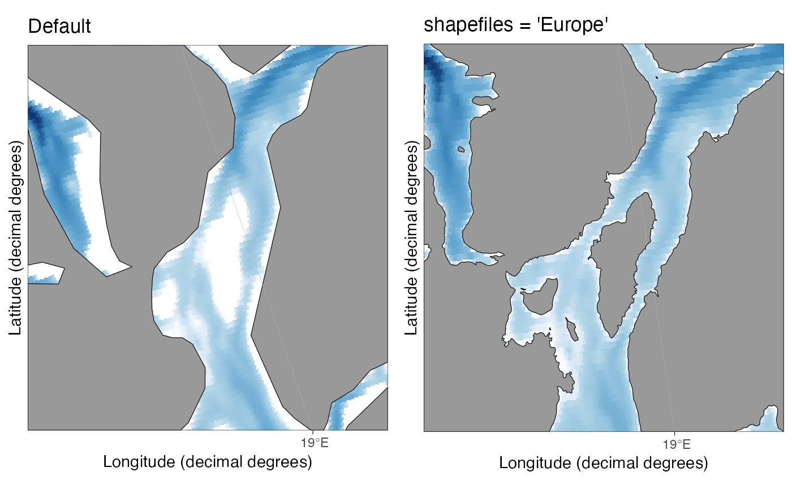

New features in ggOceanMaps version 2
Mikko Vihtakari (Institute of Marine Research)
30 August, 2023
Source:vignettes/new-features.Rmd
new-features.RmdThe old GIS packages for R (sp, raster and
rgeos) as the engine for ggOceanMaps have been replaced by
newer ones: sf handling vector data and stars
handling rasters. This allowed more efficient use of the geospatial data
while plotting maps and led to multiple improvements.
Dependencies
Number of dependencies has been reduced. Since plotting bathymetries in raster format is now quicker than in vector format, low-resolution raster data could be shipped with ggOceanMaps and the ggOceanMapsData package is no longer needed. Further, the strong dependency to the ggspatial package has been removed meaning that you’ll now need to load the package into workspace before you can use ggspatial functions to plot data on basemaps. Also the dependencies to the old GIS packages for R have been removed.
New bathymetry system
The shift to stars package allowed more efficient plotting of raster
data. This made it possible to add support for raster bathymetries.
Consequently, the bathymetry system which stemmed from PlotSvalbard, the
predecessor of ggOceanMaps, has been redesigned. You can always
roll back to the old system by setting
options(ggOceanMaps.bathy.style = "poly_blues") in your
Rprofile, but please read further because the new system is
better.
ggOceanMaps now ships with a low-resolution raster bathymetry dataset in decimal degree coordinate reference system (4326). This dataset is projected on the fly depending on basemap limits. The projection is faster and the quality is not much worse compared to pre-v2.0 ggOceanMaps:
 Processing time: 3.1 sec
The low-resolution default bathymetry is optimized for
processing time and there are higher-resolution
datasets available but you’ll need to download them. Some of
the downloads happen automatically, while for the others, you’ll need to
do a bit of setup work. As for the automatic download,
ggOceanMapsLargeData contains a compressed version of ETOPO
60 arc-second global relief model (it’s the 60 Arc-Second
Resolution/Ice surface_elevation netCDF on the webpage). Use and
download this dataset by simply specifying the bathy.style
argument:
 Processing time: 17.6 sec
Then the best bit. If this resolution still is not enough,
you can use any bathymetry grid you want as long as
stars::read_stars can open it. First, we’ll download the
entire GEBCO
15 arc-second grid (click this-
or the netCDF link for “GEBCO_2023 Grid (ice surface elevation)” in the
table on the website). This dataset is 7.5 Gb in size, so you’ll need a
good internet connection. Unzip the dataset to the downloads folder, and
define this option either at the beginning of your R session or in your
Rprofile:
options(ggOceanMaps.userpath = "~/Downloads/gebco_2023/GEBCO_2023.nc").
Now we can make maps using 15 arc-second GEBCO data:
 Processing time: 57.8 sec
Processing time: 57.8 sec
basemap() now has downsample argument which
can be used to reduce the resolution of excessively large custom raster
datasets for a given region (the lower the resolution, the smaller the
file size):
 Processing time: 47.9 sec
Note how the processing time does not change in this case, but it seems to be shorter for smaller maps.
You can also use custom bathymetries from other packages, such as
marmap, but you’ll have to specify correct
bathy.style for the data (this should be improved in future
versions of the package):
library(marmap)
dt <- data.frame(lon = c(-125, -125, -111, -111), lat = c(28, 37, 37, 28))
limits <- auto_limits(dt, expand.factor = 1.1)$projLimits
mar_bathy <- marmap::getNOAA.bathy(
lon1 = limits["xmin"], lon2 = limits["xmax"],
lat1 = limits["ymin"], lat2 = limits["ymax"])
bathy <- raster_bathymetry(stars::st_as_stars(marmap::as.raster(mar_bathy)),
depths = NULL, verbose = FALSE)
basemap(dt, shapefiles = list(land = dd_land, bathy = bathy), bathy.style = "rcb")
Note that shapefiles providing better polygon bathymetry resolution
in ggOceanMapsLargeData have been deprecated for now. Remaking all
shapefiles and quality-controlling them was too time consuming since I
had to rewrite most of the code and quality-control the changes. More
shapefiles options might appear with future releases of
ggOceanMaps.
Since the new bathymetry system is mostly raster based now, it is
advised to save the maps made by ggOceanMaps in raster
format (most journals accept jpegs
with highest quality setting and >= 600 ppi resolution).
To learn more about the new bathymetry system, please
check out the User
Manual
Get depth from bathymetry grids
Thanks to the shift to raster bathymetries, it is easy to use ggOceanMaps to estimate depth (and whether the point is on land) now:
lon = deg_to_dd(seq(0,360,30)); lat = c(80,50,20,0,-20,-50,-80)
dt <- data.frame(
lon = rep(lon, length(lat)), lat = rep(lat, each = length(lon)))
dt <- get_depth(dt)Processing time: 15.5 sec
qmap(dt, color = depth) +
scale_color_viridis_c()Depth of data frame coordinates extracted from the raster_continuous ETOPO 60 arc-second dataset. Grey (NA) indicates coordinates on land.
The new world is round - sometimes
The sf package uses round-Earth model (s2 package) instead of the flat-Earth model used by geos. While thinking round can be challenging when making polygons, ggOceanMaps attempts to use the s2 capabilities as much as possible - and you might encounter unexpected “features” as a consequence. The benefit of going round-Earth is that we can now use only one land polygon shapefile in decimal degrees, which gets projected to flat-Earth on the fly while plotting maps:

The map above is entirely produced from decimal degree data, which are transformed during plotting. Doing such transformation within a reasonable time (and quality) was not possible when using old geospatial packages for R.
We can now also plot maps crossing the anti-meridian:

Round-Earth is not only a blessing and there are still some unresolved issues, such as lines from decimal degree shapes that could not be dissolved in the new projection. Most of these issues are related to glaciers:
basemap(limits = -60, glaciers = TRUE)
A simple fix for now is to use projected shapefiles from ggOceanMapsLargeData:
basemap(limits = -60, glaciers = TRUE, shapefiles = "Antarctic")
If someone has an idea how to fix this dissolve issue, please contact the developer.
The crs argument - bring the world where your data are
A limitation with pre-2.0 ggOceanMaps was that you could not change the coordinate reference system (CRS), but you’d have to change the CRS of your data instead. This was problematic in some cases when wanting to plot spatial model results that were computed using a certain CRS. Thanks to round-Earth model, sf and stars, now you can change the CRS of maps produced by ggOceanMaps on the fly:
cowplot::plot_grid(
basemap(c(11,16,67.3,68.6), bathy.style = "rub", crs = 4326, legends = FALSE),
basemap(c(11,16,67.3,68.6), bathy.style = "rub", legends = FALSE),
basemap(c(11,16,67.3,68.6), bathy.style = "rub", crs = 32633, legends = FALSE),
ncol = 3, labels = "auto"
)Lofoten plotted using three CRS: a) 4326, i.e. decimal degrees, b) 3995, i.e. Arctic stereographic and c) 32633, i.e. UTM zone 33N.
Tweaks to qmap
Don’t forget qmap(), people. It’s meant to be your
every-day tool to check where your spatial data are located before you
move on to analyze on them. The default qmap data point
color has been changed to red to make the points more visible on the
default grey land. In addition, the long-standing issue with
qmap confusing shape argument to
shapefiles argument in basemap has finally
been fixed:

dist2land goes round-Earth
The dist2land() function was bugged for large-scale
datasets in pre-2.0 ggOceanMaps because it used a flat-Earth model and
different shapefiles depending on the location. This should not be the
case any longer as dist2land now uses the s2 package and
returns great circle distances in kilometers. The only
known bug is that the function does not manage to calculate the 0,0
lon/lat point correctly:
lon = deg_to_dd(seq(0,360,30)); lat = c(80,50,20,0,-20,-50,-80)
dt <- data.frame(
lon = rep(lon, length(lat)), lat = rep(lat, each = length(lon)))
dt <- dist2land(dt, verbose = FALSE)Processing time: 2.2 sec
qmap(dt, color = ldist) +
scale_color_viridis_c()
The function is still somewhat slow for large datasets and there
currently is no parallellization option. If you have large datasets,
split them up and try running in multiple cores using a
mclapply loop. Such an option could be added to
dist2land in future releases but it is easy to do by hand
too.
High-resolution land-shapes of Europe
Thanks to European Environment Agency, it is now possible to plot detailed land in Europe allowing plotting fjords. The bathymetry is still too low quality for most fjords, however. Here the Tromsø region:
cowplot::plot_grid(
basemap(c(18.65,19.2,69.58,69.8), bathy.style = "rub", legends = FALSE) + ggtitle("Default"),
basemap(c(18.65,19.2,69.58,69.8), shapefiles = "Europe", bathy.style = "rub", legends = FALSE) + ggtitle("shapefiles = 'Europe'")
)